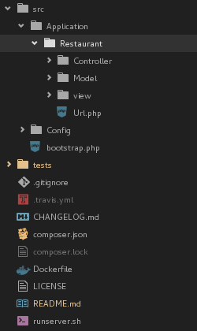
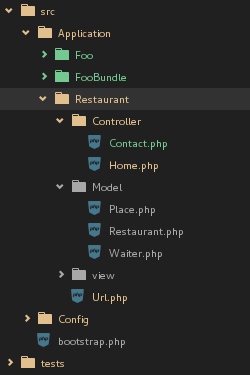

Quick start
In this section are some definitions to be respected for the correct functioning of the willer, we present the three main layers - Model, Controllers and View - in addition to working with routes in Url.php
Create the Bundle
In directory src/Application/ create the new Bundle app, this example will be created the bundle name Restaurant.
Then create the folders Controller, Model, view(or template) and the file Url.php.
Ok, bundle created.

Remains only registering this new bundle in src/Config/app.json file, as shown below:
[
"Restaurant"
]
Whenever you create or require (composer require) a new bundle to the willer, you must register this app.json the name of the bundle or application.
Ex:
[
"Restaurant",
"FooBundle",
"Foo",
]

URL route
For each bundle, there must be a Url class, it must contain a method ::url(),
which is invoked statically internally by core Willer,
is an example of Url.php file, the bundle Restaurant created earlier.
File Application/Restaurant/Url.php
<?php
namespace Application\Restaurant {
class Url {
static public function url() {
return [
'/^\/?$/' => ["Restaurant/Home/home",['GET']],
'/^\/home\/?$/' => ["Restaurant/Home/home",['GET']],
'/^\/contact\/?$/' => ["Restaurant/Contact/contact",['GET']],
'/^\/restaurant\/add\/?$/' => ['Restaurant/Home/restaurantAdd',['GET']],
'/^\/restaurant\/update\/?$/' => ['Restaurant/Home/restaurantUpdate',['GET']],
'/^\/restaurant\/delete\/?$/' => ['Restaurant/Home/restaurantDelete',['GET']],
'/^\/restaurant\/get\/?$/' => ['Restaurant/Home/restaurantGet',['GET']],
'/^\/restaurant\/select\/?$/' => ['Restaurant/Home/restaurantSelect',['GET']],
'/^\/restaurant\/other-page\/?$/' => ['Restaurant/Home/otherView',['GET']],
];
}
}
}
Model
Example of table Person, Product and Purchase, with relationship.
CREATE TABLE `person` (
`id` INTEGER PRIMARY KEY AUTOINCREMENT,
`first_name` TEXT,
`last_name` TEXT
);
CREATE TABLE `product` (
`id` INTEGER PRIMARY KEY AUTOINCREMENT,
`name` TEXT NOT NULL,
`price` REAL NOT NULL
);
CREATE TABLE `purchase` (
`id` INTEGER PRIMARY KEY AUTOINCREMENT,
`person_id` INTEGER NOT NULL,
`product_id` NUMERIC NOT NULL,
`quantity` INTEGER NOT NULL
);
The model will be created in the Restaurant bundle, in the Model folder, accordance with SQL entities listed above.
namespace Application\Restaurant\Model\Person {
use Core\Model;
class Person extends Model {
public $id;
public $first_name;
public $last_name;
protected function schema() {
return [
"id" => Model::primaryKey(),
"first_name" => Model::char(["length" => 40]),
"last_name" => Model::char(["length" => 40])];
}
protected function name() {
return "person";
}
}
}
namespace Application\Restaurant\Model\Product {
use Core\Model;
class Product extends Model {
public $id;
public $name;
public $price;
protected function schema() {
return [
"id" => Model::primaryKey(),
"name" => Model::char(["length" => 40]),
"price" => Model::float(["length" => 20])];
}
protected function name() {
return "product";
}
}
}
namespace Application\Restaurant\Model\Purchase {
use Core\Model;
use Application\Restaurant\Model\Person;
use Application\Restaurant\Model\Product;
class Purchase extends Model {
public $id;
public $person_id;
public $product_id;
public $quantity;
protected function schema() {
return [
"id" => Model::primaryKey(),
"person_id" => Model::foreignKey(["table" => new Person\Person,"null" => 0]),
"product_id" => Model::foreignKey(["table" => new Product\Product,"null" => 0]),
"quantity" => Model::integer(["length" => 20])];
}
protected function name() {
return "purchase";
}
}
}
Controller
The controller will create a Home.php name file, it will contain some actions,
that will be accessed by routes previously registered at class Url.

<?php
namespace Application\Restaurant\Controller {
use Core\Controller;
use Core\DAO\Transaction;
use Core\Util;
use Application\Restaurant\Model\Restaurant;
class Home extends Controller {
private $db_transaction;
public function __construct($request_method = null) {
parent::__construct($request_method);
// load transaction object
$this->db_transaction = new Transaction();
}
public function home() {
print 'home page';
}
public function restaurantAdd() {
// load model with Transaction instance
$restaurant = new Restaurant($this->db_transaction);
// open connection
$this->db_transaction->connect();
// save
$restaurant->save([
'name' => 'place of test',
'serves_hot_dogs' => 1,
'serves_pizza' => 1,]);
Util::renderToJson($restaurant);
}
public function restaurantUpdate() {
// load model with Transaction instance
$restaurant = new Restaurant($this->db_transaction);
// open connection
$this->db_transaction->connect();
// save
$restaurant->save([
'name' => 'place of test',
'serves_hot_dogs' => 1,
'serves_pizza' => 1,]);
// update
$restaurant->place = 'bla e bla';
$restaurant->serves_hot_dogs = 0;
$restaurant->save();
Util::renderToJson($restaurant);
}
public function restaurantDelete() {
// load model with Transaction instance
$restaurant = new Restaurant($this->db_transaction);
// open connection
$this->db_transaction->connect();
// delete all register without filter
// $restaurant->delete();
// save
$restaurant->save([
'name' => 'place of test',
'serves_hot_dogs' => 1,
'serves_pizza' => 1,]);
// delete current instance
$restaurant->delete();
Util::renderToJson($restaurant);
}
public function restaurantGet() {
// load model with Transaction instance
$restaurant = new Restaurant($this->db_transaction);
// open connection
$this->db_transaction->connect();
// get(unique)
$restaurant->get([
'name' => 'place of test']);
// delete current instance
// $restaurant->delete();
// update
// $restaurant->name = 'bla e bla';
// $restaurant->serves_hot_dogs = 0;
// $restaurant->save();
Util::renderToJson($restaurant);
}
public function restaurantSelect() {
// load model with Transaction instance
$restaurant = new Restaurant($this->db_transaction);
// open connection
$this->db_transaction->connect();
// select with where, order by, limit(pagination) and join left
// $restaurant_list = $restaurant
// ->where([
// 'restaurant.id' => [15,16],])
// ->orderBy([
// 'restaurant.serves_pizza' => 'desc'])
// ->limit(1,5)
// ->execute([
// 'join' => 'left']);
// select with update and return changes
$restaurant_list = $restaurant
->where([
'restaurant.serves_hot_dogs' => [1,0],]) // id in(1,2)
->orderBy([
'restaurant.serves_pizza' => 'desc'])
->limit(1,5) // page 1 limit 5
->update([
'name' => 'place update yea!']) // update in current select
->execute([
'join' => 'left']); // join left|right optional
// list of query's
// Util::renderToJson($restaurant->dumpQuery());
// render to json result
Util::renderToJson($restaurant_list);
}
}
}
View or Template
In view folder (or template), the static files(html, js, css, jpg, etc) will be stored. You can feel free to use engine templates, eg Twig. Or create something amazing with angular.js
Thank you.